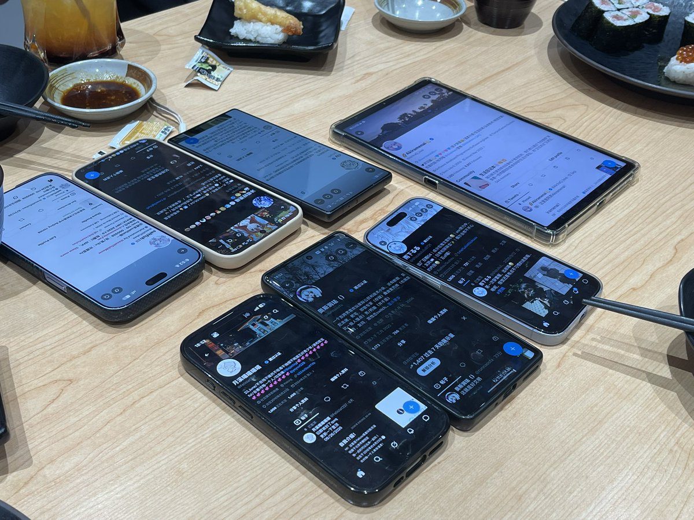
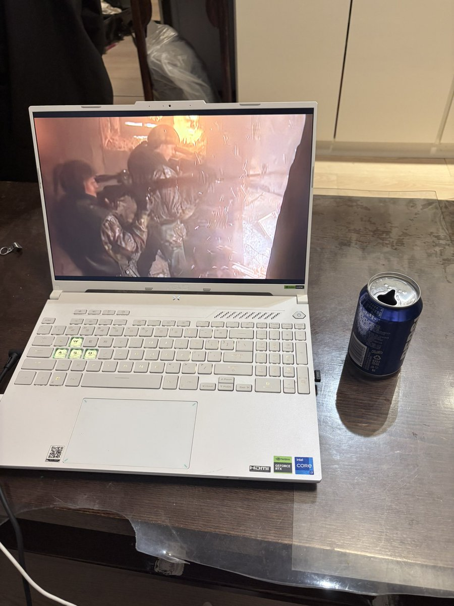

困困鱼崽仔小云🏳️⚧️
@kunkunyuzaizai
@Felicia1337 @bghtnya @runnaosfa @asaltfishes @Ak1raQ_love @shizukululu0721 @fcjdfb mate x?


月溪嘻嘻嘻嘻
@Felicia1337
和大家玩很开心！
寿司郎好吃蛋挞好吃😋dq初音未来冰淇淋好吃🙃
圈一下今天面到的大家@bghtnya @runnaosfa @asaltfishes @Ak1raQ_love @shizukululu0721 @fcjdfb 还有下一场中推特被封的某人和他对象
出租司机好有趣我点歌他真放（）
跑别人家通宵打游戏
🤓👍 https://t.co/Qa9XT8B2iD